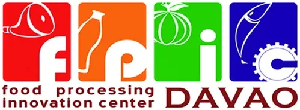

Davao Food Processing Innovation Center — Philippine Women's College of Davao
Philippine Women's College of Davao · Region XI
The Food Processing Innovation Center — Davao (FPIC-Davao) at Philippine Women's College of Davao holds the distinction of being the first Food Innovation Center established in the Philippines (May 2014), serving as the founding model for the nationwide DOST FIC network now operating across all regions. Hosted by PWC Davao in Davao City, the FPIC-Davao serves the Davao Region's (Region XI) food-sector MSMEs, agri-entrepreneurs, and processors with professional food technology access.
- Category
- Food Innovation Center
- Host institution
- Philippine Women's College of Davao
- City
- Davao City
- Region
- Region XI
- Operating status
- Operating
About the Center
Equipped with the standard DOST FIC machinery suite — spray dryer, freeze dryer, water retort, and vacuum fryer — the center enables Davao Region's food producers to transform the area's abundant tropical resources (durian, banana, cacao, coconut, tuna, and other marine products) into processed, packaged, and market-ready products that meet food safety and regulatory standards.
As the pioneering FIC and DOST flagship model, FPIC-Davao brings together PWC Davao's food science expertise with DOST's technology transfer mandate — supporting the Davao Region's food industry through accessible, professionally guided food processing, product development, and market readiness services.
Programs & Services
- Food Product Development — Formulation, process design, and prototype development for new or improved food products from Davao Region's tropical agricultural commodities
- Spray Drying — Conversion of liquid foods into shelf-stable powder ingredients, functional food components, and encapsulated products
- Freeze Drying — Preservation of high-value foods (fruits, vegetables, seafood) with maximum retention of nutrients, flavor, and appearance
- Water Retort Processing — Development of sterilized, shelf-stable pouched and canned food products for extended shelf life and food safety compliance
- Vacuum Frying — Production of low-oil crispy chips and snacks from tropical fruits and vegetables including durian, banana, and jackfruit
- Packaging & Labeling Support — Assistance with food packaging design, FDA label compliance, nutrition labeling, and export-ready packaging
- Food Safety & Regulatory Advisory — Guidance on GMP, HACCP, FDA registration, and quality standards for food enterprises in Region XI
- MSME Training & Capacity Building — Hands-on training in food processing technology, equipment operation, and product commercialization
Contact
Sources & references
- pwc.edu.ph/innovations-and-socialventures/fpic
- dost.gov.ph/knowledge-resources/news/34-2014-news/84-dost-launches-first-fo…
- region11.dost.gov.ph/fpic
Details are drawn from public records and the sources above, July 2026.
Startupreneur Innovation Hub · synced from the Notion catalog (July 2026) · status: published.